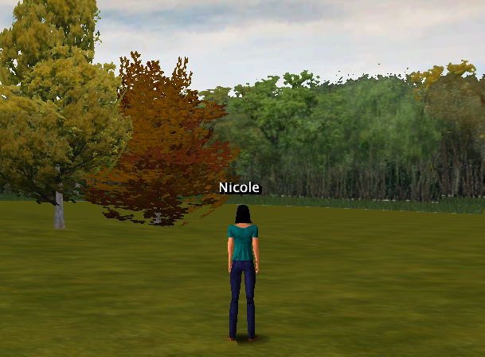

This guide contains a quick overview of some of the most important end-user features of Open Wonderland. For more information, refer to the tutorial, "Learning the Basics of Open Wonderland."
Navigation
 Use the arrow keys on your keyboard to move your avatar forward, backward, right and left. For more navigation help, select "Navigation Reference" from the Help menu.
Use the arrow keys on your keyboard to move your avatar forward, backward, right and left. For more navigation help, select "Navigation Reference" from the Help menu.
The navigation help window is interactive so that you may click on the controls in the window to move your avatar.
Avatars
By default, you are given a "cartoon" avatar. To change your avatar, select "Configure Avatar" from the Edit menu.
To change to a different cartoon avatar, select the avatar name and click "Use." To create an avatar that can walk and gesture, click on "New..."
 The "Configure Avatar" window will open, allowing you to select your avatar's gender and various other hair and clothing options.
The "Configure Avatar" window will open, allowing you to select your avatar's gender and various other hair and clothing options.
Click "Use" for others to see your new avatar.
Gestures
Select "Gestures" from the Windows menu.
Click on a gesture button in the bottom left to gesture. Moving or turning your avatar will end the gesture. To collapse the gesture controls, click on the "Hide Gestures" button in the lower left corner.
Placemarks
Placemarks are like bookmarks in a web browser. Select the name of a Placemark in the Placemarks menu to navigate to that location.
Audio Volume
Select "Audio Volume" from the Window menu to open the audio controls.
Use the sliders to raise or lower your microphone and headset volume. Clicking on the microphone icon will toggle you on and off mute. The open square bracket key ( [ ) is also a short cut for turning mute on and off. Notice the square brackets around the avatar's name in the Gestures panel. This indicates that an avatar's microphone is muted.
Inserting Objects
There are multiple ways to insert content into a Wonderland world. One way is to select "Object" from the Insert menu.
This displays a window with all the 2D and 3D applications currently installed on your server.
New objects always appear in front of your avatar, so position your avatar approximately where you want the object to appear.

Select an item, such as the Cone of Silence, from the Insert Object window and click "Insert. The object will appear in front of you.

Drag and Drop
You can drag and drop images directly from a web browser window into the Wonderland window.
Be sure the image you have selected is a .png, .jpg, or .gif file.
You can also drag and drop files from your computer. These can be images, PDF documents, or 3D models in .kmz or .dae format.
You may be able to drop in other types of content as well. This depends on the apps, known as modules, that you have installed on your Wonderland server you are currently using.
Tips
How to Find 3D Models
Many free 3D models are available in the Google 3D Warehouse.
Ensuring Good Audio Quality
Using a headset in Wonderland is essential. Open speakers will introduce echo into the world. To minimize background noise, it is also helpful to keep your avatar on mute when you are not actively speaking. Use the open square bracket "[" key to turn mute on and off.
Unsticking your Avatar
If you can't move your avatar, you may be too close to a 3D model. Try turning before you walk. If that doesn't work, select "Avatar Collision Response Enabled" from the Tools menu to turn off collision.